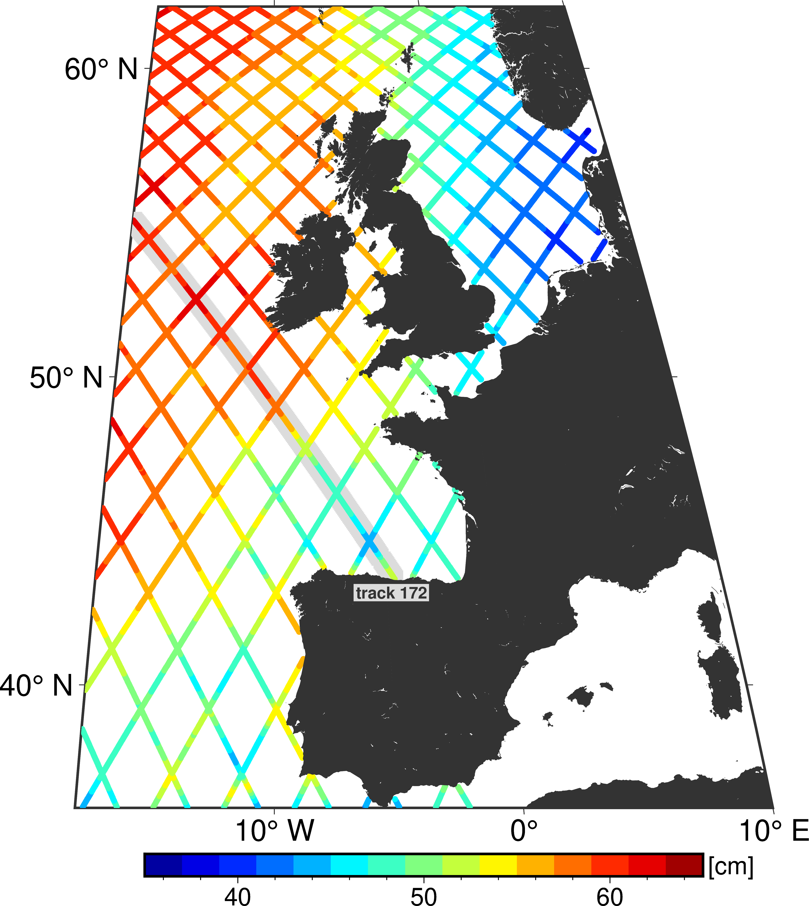
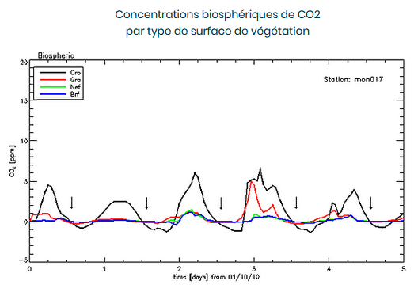

■ LMD Laboratoire de Météorologie Dynamique - UMR 8539 LMD/CNRS/UPMC - Groupe EMC3 - Paris, France Période: Septembre 2014 - Août 2015 Référent: Geneviève Sèze, Chargée de Recherche CNRS Projet: Adaptation de l'algorithme ISCCP pour application d'une méthode de classification en type nuageux à partir des données METEOSAT.
Etude
La mission satellitaire Megha-Tropiques est représentée par une collaboration Franco-Indienne.
Elle est dédiée à l'étude du cycle de l'eau atmosphérique et des échanges d'énergie dans les régions intertropicales.
Ce projet intitulé Classification Nuageuse Géostationnaires s'inscrit dans le cadre du pôle thématique ICARE, avec le soutien du CNES.
L'objectif de cette étude a été de finaliser et d'évaluer un produit de type masque nuageux et de classification en type nuageux construit
à partir des données de satellites géostationnaires, puis de le mettre à disposition de la communauté scientifique ICARE.
Imagerie et Produit
Dans le cadre de cette étude de météorologie opérationnelle en configuration IODC (Indian Ocean Data Coverage), l'utilisation des données fournies par l'imagerie du satellite METEOSAT-7 va nous permettre de travailler sur le développement d'une chaîne de traitement, afin de fournir des produits
de classification nuageuse. Le radiomètre imageur MVIRI (Meteosat Visible and Infrared Imager) à bord du satellite, dispose de trois bandes spectrales d'émissions: le canal visible (VIS) pour la bande [0.5 - 0.9 µm],
le canal infrarouge thermique (IR) pour la bande [10.5 - 12.5 µm] et la bande d'absorption de la vapeur d'eau (WV) pour la gamme [5.7 - 7.1 µm]. Les trois figures ci-dessous représentent le disque terrestre entier observé par le satellite pour ces cannaux.
Les produits sont développés en collaboration avec le Centre de Météorologie Spatiale et sont disponibles pour quatre satellites géostationnaires.
Afin de boucler l'analyse dans la ceinture tropicale, un cinquième satellite, METEOSAT-7, est utilisé.
Le radiomètre en question ne dispose pas des canaux nécessaires pour pouvoir appliquer le même code de traitement que pour les autres satellites.
Des outils d'évaluation de la qualité géophysique de ces produits ont également été développés, en utilisant les données des Lidar et Radar spatiaux CALIOP et CLOUDSAT,
ainsi que celles des sondeurs AIRS et IASI. La figure ci-dessous est un exemple de produit défini par l'obtention d'une carte instantanée qui forme une image composite.
Elle illustre la classification obtenue pour chaque pixel, à partir des valeurs de réflectance, de température de brillance et des écarts-types spatiaux associés.
Algorithme
Ces produits s'obtiennent en appliquant une procédure de traitement similaire à celle de l'algorithme développé pour détecter la couverture nuageuse et déterminer les types nuageux et
l'altitude du sommet des nuages par le SAFNWC (Satellite Application Facility for NowCasting). Ce traitement avait été réalisé à l'aide du radiomètre SEVIRI à bord de la plateforme
METEOSAT Seconde Génération (MSG) et appliqué récemment aux données des satellites géostationnaires GOES (Geostationary Operational Environmental Satellite) et MTSAT (Multi-Functional
Transport Satellites).
Pour obtenir ces mêmes informations à partir des données METEOSAT première génération (MFG), l'objectif est d'appliquer l'algorithme développé par le programme ISCCP (International
Satellite Cloud Climatology Project) pour le traitement des données géostationnaires et adapté récemment aux données pleine résolution spatiale et temporelle METEOSAT-7 par l'équipe de
W.B. Rossow.
Dans cette étude, sont analysés les résultats obtenus par la chaîne de traitement ISCCP (produit HXS), pour les comparer aux données extraites du programme ISCCP (produit DX)
Les données DX, disponibles à l'échelle du pixel d'observation du satellite, permettent de conserver la haute résolution spatiale, avec des pixels de 5km² échantillonnés tous les 30km,et
temporelle, avec une fréquence de 3h.
L'adapdation de l'algorithme de la chaîne de traitement a été réalisée de manière à introduire dans le code, des coefficients de calibration des radiances visible et infrarouge ainsi
que pour le passage de radiance en température. Il est parfois indispensable d'appliquer des facteurs d'échelle pour corriger des biais entre les deux types de données, ceci afin de
comprendre la stabilité de l'algorithme à la calibration, et l'évolution des distributions à travers leurs réponses spectrales, comme illustrées sur les figures ci-dessous.
Les analyses des données DX-B3 donnent accès à des informations statistiques calculées en termes de pourcentages, pour différents paramètres (couverture nuageuse, pressions au sommet
des nuages et radiances pour le Visible et l'Infrarouge), et sont utilisées comme références de climatologie. Ces statistiques sont établies pour chaque jour de la période considérée et chaque
heure GMT, en prenant en compte tout le disque terrestre de l'imagerie satellitaire. Des comparaisons de distributions sont réalisées, mais aussi des cartes en instantané pixel à pixel.
Les données sont traitées séparément heure par heure et les fréquences d'occurrence des nuages dépendent du traitement de chaque pixel par l'algorithme, en fonction du type de masque
utilisé (Terre ou Mer). Un pixel nuageux aura la valeur 1 et un pixel non-nuageux la valeur 0. Ces statistiques sont cumulées puis normalisées.
Méthode de classifiaction
Afin d'établir une classification liée à la distribution spatiale des nuages, des corrélations ont été effectuées entre les trois canaux du satellite, pour mettre en évidence
des structures nuageuses qui varient également selon les propriétés Terre-Mer. Il est alors possible de construire trois histogrammes bi-dimensionnels: VIS-IR, WV-IR et VIS-WV. Les deux
premiers types d'histogrammes obtenus sont représentés sur l'ensemble des figures ci-dessous.
Pour classifier chaque pixel d'une image satellitaire et les regrouper en classes de nuages, la méthode de Clustering Dynamique, ou DCM (Dynamic Cluster Method) est appliquée. Son formalisme est expliquée en détail dans l'article de Diday and Simon, 1980.
Il s'agit d'une méthode itérative permettant de partitionner une distribution dans un espace à plusieurs paramètres. On obtient une répartition statistique des paramètres afin de déterminer les types de nuages et de surfaces présents à l'intérieur d'une région donnée, qui correspond à l'Océan indien dans cette étude.
L'espace des paramètres est de dimension 4, et peut être noté:
P = [VIS, IR, σVIS, σIR]
où [VIS, IR] sont des paramètres spectraux correspondant aux réflectances et aux températures de brillance, et [σVIS, σIR] sont des paramètres spatiaux associés aux écarts-types locaux,
calculés dans un voisinage de 3x3 pixels pour le visible et l'infrarouge et dans un voisinage de 5x5 pixels pour la vapeur d'eau.
Cette méthode prend en compte deux critères.
La minimisation de la distance euclidienne entre les noyaux, correspondant aux centres de gravité des classes, au sein d'une même classe (distance intra-classe), et la maximisation de la distance entre les différentes classes (distance inter- classes).
La figure ci-contre représente d'une part, les positions des centres de gravité des classes dans l'espace [VIS, IR] des paramètres spectraux, correspondant à la réflectance et la température de brillance; puis d'autre part,
l'amplitude des barres d'erreurs centrées sur les centres de gravité qui indiquent la valeur des écarts-types, paramètres spatiaux.
Le processus itératif consiste a effectuer un certain nombre de tirages aléatoires des noyaux. On décide de ne garder que les tirages ayant généré au moins 20 classes.
Il est alors possible de construire la distribution des noyaux en fonction d'un nombre maximal d'itérations et selon un critère de convergence.
Les classes sont calculées pour une zone bien définie dans l'espace des paramètres P, et pour une heure fixe.
On cherche ensuite à représenter l'évolution temporelle des distributions, en générant des noyaux pour des instantanés (slots) inférieurs et supérieurs à un slot de référence (i.e les demi-heures précédant et suivant 12h GMT, l'heure de référence).
Cette procédure permet d'obtenir une bonne continuité entre la construction des différentes classifications pour plusieurs heures successives.
Cette méthode produit ainsi en sortie un ensemble de classes de centres de gravité pour chacune des heures GMT.
La figure ci-contre représente l'évolution temporelle en un jour donné, par comparaison de la superposition de deux tirages aléatoires dans l'espace de paramètres [VIS, IR]. De manière générale, il est difficile de faire une bonne discrimination du type de nuages près de la surface, dû à une grande variabilité spatiale d'un pixel à l'autre.
■ SHOMService Hydrographique et Océanographique de la Marine - DOPS/HOM/REC - Brest, France Période: Septembre 2016 - Juin 2017 Référent: Gwénaëlle Jan, Chargée de Recherche CNRS Projet: TOSCA - SURFACE DE RÉFÉRENCE (SHOM/CNES) Détermination d'une surface de référence marine par fusion de données.
Etude
Dans le domaine maritime, la hauteur d'eau est une valeur critique qui conditionne grand nombre d'activités.
Cette hauteur clef est reportée sur les cartes marines sous la forme d'une hauteur minimum censée ne jamais être dépassée : c'est la hauteur de référence.
L'océan est un domaine qu'il est difficile de couvrir par un réseau de mesures dense et pérenne.
Le déploiement de marégraphes offre une vue ponctuelle; Au large, le GNSS (Global Navigation Satellite System) apporte la précision nécessaire pour que la donnée altimétrique devienne exploitable pour la cartographie marine.
C'est spécifiquement entre le large et la côte que le réseau GNSS est venu combler une mesure lacunaire. La densité du réseau du positionnement précis, ainsi que la précision de sa résolution géométrique, ont fait avancer l'hydrographie en donnant du relief au calcul des hauteurs de références.
Produit
Ce projet intervient dans le cadre de d'une recommandation d'unification des différentes surfaces hydrographiques marines par l'Organisation Hydrographique Internationale (OHI), et nécessite la réalisation de surfaces de références verticales marines.
Les premiers résultats de cette étude montre l'impact de la nature du géoïde utilisé pour le calcul de la Surface Moyenne Hydrographique (SMH), obtenue par fusion des données altimétriques, des mesures GPS et marégraphiques.
En 2016, un écart de l'ordre de 15cm a été constaté entre deux surfaces moyennes, l'une exploitant les données du géoïde EGG97 (European Gravimetric Geoid) et l'autre, les données du géoïde EGG2015, le plus récent.
Les deux figures ci-dessous illustrent la fusion des données altimétriques et GPS, et en particulier les différences de hauteurs de SMH selon les deux géoïdes utilisés, pour la zone de Saint-Malo.
Méthode
Une première étape consiste à analyser des mesures GPS provenant du SHOM. On cherche à décrire les étapes menées sur les données avant leur utilisation pour l’estimation d’une surface moyenne hydrographique par moindres carrés.
Plus précisément, pour chacune des zones disponibles, nous avons segmenté les mesures GPS en profils, correspondant à un ensemble de mesures géographiquement situées suivant une droite.
Ces profils nous ont alors servi à recaler ces mesures en minimisant (au sens des moindres carrés) les écarts aux points de croisement par ajustement d’un biais par profil.
Il faut ensuite procéder au retrait de la contribution du modèle du géoïde utilisé, puis soustraire un plan moyen dont les paramètres sont estimés également par moindres carrés.
Avant d'estimer la SMH côtière par interpolation des profils GPS, il faut approcher les covariances des résidus de hauteurs de mer GPS par des modèles analytiques à support compact tels que ceux introduits dans Moreaux* (2008).
Deux outils sont utilisés, un premier pour l’estimation des covariances isotropes des résidus GPS, et un second pour l’approximation de ces covariances, dites empiriques, par un modèle analytique.
Ce modèle renvoie les paramètres donnant la meilleure approximation pour estimer ces covariances pour un intervalle de distance donné (cf. figures ci-dessous). Les modèles de covariances à support compact ont ensuite été introduits dans un logiciel dédié à l’interpolation des mesures GPS résiduelles, aux points des grilles de projection des futurs niveaux de référence.
Les données altimétriques correspondant aux anomalies du niveau de la mer (SLA, Sea Level Anomalies) le long de la trace satellite sont fournies par le CTOH (Centre d'études Topographiques de l'Océan et de l'Hydrosphère).
Elles sont disponibles pour un fichier par trace et pour chacune des quatre missions altimétriques disponibles (Topex/Poséidon, Jason-1, Geosat Follow On et Envisat).
Chaque fichier contient l'anomalie du niveau de la mer à chaque cycle et à chaque point de la trace.

■ IFREMERInstitut Français de Recherche pour l'Expoiltation de la Mer - DYNECO/PHYSED - Brest, France Période: Année 2011 Référent: Pierre Le Hir, ancien Directeur de Recherche Projet: MODEL - Etude hydrodynamique de la baie et l'estuaire de la Seine.
Etude
Le projet MODEL constitut un partenariat avec le programme scientifique Seine-Aval. Ce travail a été réalisé dans le but de simuler le fonctionnement hydrodynamique de la baie et de l'estuaire de la Seine.
La majeure partie de cette étude a consisté en la modélisation de plusieurs variables physiques intervenant dans les processus hydrodynamiques. Les deux figures ci-contre illustrent l'emprise du maillage de la zone d'étude.
Des données d'observation provenant de mesures marégraphiques et acoustiques ont contribué à la validation hydrodynamique du modèle MARS (Model for Applications At Regional Scales) développé à l'institut.
Une première approche avait pour finalité d'identifier dans le code de calcul, les différents paramètres mis en jeu dans la phase de calibrage (longueur de rugosité, termes de cisaillement).
Produit
L'étude courantologique est un moyen d'évaluer la circulation des masses d'eau sur des distances et des échelles de temps relativement élevées (plusieurs dizaines de mètres et quelques heures).
Le mouvement horizontal de la marée génère au large d'importants volumes d'eau, créant ainsi des courants initialement faibles et dirigés dans le sens de propagation de l'onde.
Les courants de surface sont également influencés par le vent en surface.
Les mesures des courants de marée réalisées sur ces zones (baie, embouchure et estuaire) vont permettre de vérifier la capacité du modèle à reproduire les intensités et les directions des vitesses des courants de surface, ainsi que leur distribution verticale dans la colonne d'eau.
Toutes les mesures in situ (eulériennes) sont réalisées à l'aide d'ADCP (Acoustic Doppler Current Profiler).
La vitesse du courant est déterminée à partir de la fréquence induite par la vitesse des particules en suspension dans l'eau.
La colonne d'eau est découpée en couches uniformes (niveaux sigma), et pour chacune d'elle, la direction et la valeur moyennée de la vitesse sont déterminées.
La mesure de la vitesse dans les différentes couches est obtenue en appliquant un retard temporel entre l'instant d'émission et celui de réception de l'instrument.
Les deux figures ci-contre illustrent sur un profil vertical, les intensités et directions des vitesses des courants moyennés sur la colonne d'eau en un point d'étude.
Elles permettent de comparer simultanément les résultats issus des sorties du modèle MARS avec les mesures ADCP.
Modèle
MARS (Model At Regional Scale) est modèle numérique qui intègre un algorithme de calcul utilisant la méthode des différences finies.
La discrétisation spatiale et temporelle des équations de Saint-Venant se fait à l'aide d'une grille structurée et décentrée de type C dans la classification d'Arakawa.
L'élévation de surface libre, la bathymétrie ainsi que les différents marqueurs sont calculés au centre des mailles de la grille.
En revanche, les composantes du champ de vitesse sont déterminées au centres des bords Est et Nord de chaque maille, et dirigées selon l'axe Ouest-Est pour la composante zonale, et selon l'axe Sud-Nord pour la composante méridienne.
La figure ci-dessous illustre le champs de vitesses des courants de surface en intensité et directions.
La bathymétrie du modèle est calculée à partir de données acquises par des sondeurs mono et multi-faisceaux du SHOM et de l'IFREMER, de données issues de Modèles Numériques de Terrain (MNT) et de données LIDAR.
Cela permet d'obtenir une résolution spatiale adaptée à la zone d'étude. A partir des séries de points avec leurs coordonnées géographiques et leur profondeur, dont la densité peut varier d'une région à l'autre selon la disponibilité des données,
une interpolation est effectuée en faisant intervenir une méthode de recherche des plus proches voisins, pour chaque point "en eau" de la grille du maillage. La figure ci-contre représente la bathymétrie définie sur la baie et l'embouchure de la Seine.
Rapport de Master
RENAULT, E. Validation hydrodynamique du modèle curvilinéaire de l'estuaire de la Seine.
Université de Bretagne Sud - IFREMER centre de Brest.
Rapport [pdf]
Article, co-auteur
Kervella, Y., Khojasteh, I., Le Hir, P., Renault, E., Lemoine, J-P. Modélisation hydrodynamique tridimensionnelle en coordonnées curvilignes non-orthogonales de l'estuaire de la Seine (pp. 89-100) - DOI: 10.5150/jngcgc.2012.010-K
Rapport [pdf]
■ LSCELaboratoire des Sciences du Climat et de l'Environnement - IPSL - UMR 8212 CNRS/CEA/UVSQ, Paris, France Période: Juin 2012 - Août 2013 Référent: François-Marie Bréon, Directeur Adjoint Projet: LOGOFLUX - consortium ESA-ESTEC, LSCE, NOVELTIS, IUP-UB, SRON
Traitement de données de la mission CarbonSat - Application d'un modèle d'inversion de CO2 - Étude de sensibilité
Etude
Des mesures globales de concentrations de dioxyde de carbone et de méthane, associées à des schémas de modélisation inverse, sont nécessaires pour étudier les flux de surface à échelles locale et régionale.
L'objectif principal de la mission CarbonSat est de surveiller et de mettre en évidence les sources d'émissions importantes, telles que les centrales électriques.
L'étude LOGOFLUX porte sur la quantification des sources et des puits de CO2 et de CH4.
Il s'agit d'apporter une meilleure compréhension des processus qui contrôlent la dynamique du cycle du carbone,
et d'obtenir une estimation indépendante des émissions locales de gaz à effet de serre pour une meilleure discrimination entre les flux anthropiques et biosphériques.
Modèle
Cette étude a nécessité le développement d'outils de traitement de données afin d'évaluer la capacité de CarbonSat à simuler le transport atmosphérique de CO2 à haute résolution, à partir d'une source d'émission ponctuelle (ex. cheminée) ou semi-ponctuelle (ex. échelle de la ville de Paris).
Pour cela, un modèle analytique gaussien de transport atmosphérique a été développé par F.-M. Bréon, de manière à simuler et analyser le profile spatio-temporel des concentrations, en fonction de plusieurs paramètres. La figure de gauche illustre un instantanné CarbonSat du panache de CO2 à l'échelle de Paris, celle de droite représente le transport horaire des émissions anthropiques associées.
Les paramètres du modèle analytique sont les suivants: le champ de concentration de CO2 en background, le flux effectif lié à la diffusion verticale, la direction du vent, et deux paramètres permettant de calculer la largeur du panache à l'endroit observé.
Le schéma de modélisation inverse proposé consiste à déterminer ces cinq paramètres, par minimisation d'une fonctionnelle quadratique (inversion analytique).
Produit
De manière générale, nous avons représenté les données selon la disposition décrite sur la figure ci-contre: En A, les flux de surface des émissions anthropiques.
En B, le champ de concentration de CO2 issu des sorties du modèle de transport atmosphérique CHIMERE et qui correspondrait aux observations issues des mesures satellitaires: c'est le CO2 observé (pseudo-observations).
En C, la représentation de la concentration de CO2 après inversion par le modèle analytique, sur un disque de rayon 70km autour de Paris.
En D, un nuage de points indiquant le degré de corrélation entre les signaux de CO2 observés et inversés.
Le signal de concentration observé dépend fortement du facteur météorologique (directions et intensités du vent en surface), qui impacte la structure spatiale du panache.
Sur la figure ci-contre, le panache de concentration n'est modifié que par le vent et la source ponctuelle d'émission, qui est constante dans le temps.
On peut constater dès lors, et dans une large mesure, une bonne corrélation entre les deux signaux générés par les modèles.
Il est possible d'envisager en outre différents scénarios de simulations.
A titre d'exemples, les deux cas illustrés ci-dessous sont réalisés à partir d'hypothèses plus réalistes: La distribution spatiale des flux de surface est hétérogène, l'intensité des émissions est différente selon le type de flux considéré et elles varient donc dans le temps.
Les simulations sont obtenues sur une période de 5 jours et la configuration des données est identique.
Les résultats de la figure ci-dessous, à gauche, montrent que l'on peut reproduire à l'aide du modèle analytique d'inversion, la structure d'un panache de concentration qui présente de grandes similarités, en intensité et en direction, avec les observations.
Dès lors, les corrélations entre les signaux de CO2 inversé et observé sont satisfaisantes.
En revanche, si l'on ajoute du bruit gaussien sur les mesures (de l'ordre de 1 ppm), on remarque sur la partie droite qu'il est quasiment impossible d'établir une corrélation,
même si l'on est capable d'extraire un signal similaire à la structure d'un panache.
En tenant compte de la variabilité spatiale et temporelle des émissions anthropiques, on obtient des valeurs de flux multipliées par un facteur 2 environ, sur une année, en comparaison avec une source ponctuelle constante d'émission.
De plus, les flux de surface biosphériques, fournis par l'ECMWF (European Center for Medium-Range Weather Forecasts) pour une résolution spatio-temporelle de 15 x 15 km² toutes les 3h, sont également pris en compte dans les simulations.
En effet, on considère les conditions aux limites ouvertes dans le modèle CHIMERE, lui-même forcé par le modèle LMDz de plus grande emprise.
On peut observer alors d'importantes variations de concentration de fond (background) avec l'apparition de structures de forte intensité.
C'est ce type de structures de plus grande échelle, qui est représenté en B sur les figures ci-dessous. On sait que le signal correspondant au panache de concentration sur Paris, en A, dépend dans une large mesure des vitesses de vent en surface.
Dans des conditions d'observation dégradées (vent, couverture nuageuse), le bruit de mesure a une contribution plus importante que le signal d'origine.
Il sera alors difficile de retrouver les flux de surface locaux si l'on prend en compte ces structures lors de l'inversion.
Méthode
Les outils développés dans ce projet ont permis de tirer pleinement parti d'une nouvelle information, à savoir la concentration de la colonne à haute résolution spatiale.
En effet, la concentration est ici intégrée sur la verticale, c'est-à-dire moyennée sur la colonne.
L'ensemble des produits a été simulé à partir des données de niveau 2 du satellite, contenant pour chaque pixel au sol, la moyenne des informations du noyau sur les rapports de mélange du CO2 atmosphérique,
et un certain nombre de paramètres (temps, géolocalisation, albédos, angle zénithal solaire, épaisseurs optiques des nuages et des aérosols, etc.) ainsi que des erreurs aléatoires (bruit sur les observations, en ppm) et systématiques (biais de mesure).
Le domaine d'étude pour effectuer les simulations de transport atmosphérique est représenté sur la figure ci-contre. La résolution horizontale (taille d'un pixel) est indiquée en rouge pour chaque zone.
L'idée première est de déterminer l'expression analytique d'un flux. D'après la loi de conservation de la masse, on peut obtenir une équation reliant le flux à certains paramètres du modèle analytique d'inversion.
On peut noter que le flux dépend en particulier du vent, à différents niveaux d'altitudes. Dans le cas d'une source ponctuelle constante, on peut déterminer la valeur du flux "estimé" à partir du résultat de l'inversion, et pour un vent localisé au niveau de la source.
Il sera alors possible de comparer les séries temporelles de flux estimés et "réels". Les flux réels correspondent alors à la valeur constante d'émission de la source. On procède de la même manière dans le cas d'une distribution des émissions variables dans le temps.
On constate ainsi des décalages au temps d'observation du satellite, en termes d'intensité, liés à l'incertitude des hauteurs d'émissions lors du transport atmosphérique du panache.
L'étude de sensibilité effectuée au cours de ces simulations a montré que les principales sources d'incertitude sur l'estimation des flux de surface, peuvent être liées à la modification de certains paramètres.
Par exemple, la variation du rayon d'intégration de la concentration dans le modèle d'inversion, l'incertitude liée au choix du niveau vertical du vent, l'impact de bruits sur les observations. Ces incertitudes sont d'autant plus grandes si l'on considère des émissions hétérogènes.
En ce qui concerne les données des flux de surface à l'échelle de la ville de Paris, un accord a été établi avec l'organisme public AIRPARIF, qui a fourni un inventaire des émissions anthropiques de CO2. On dispose ainsi d'une liste d'émissions réalistes , définie selon un code par secteur.
En considérant le total des émissions, il est alors possible de distinguer parmi toutes les contributions, le signal le plus représentatif des valeurs d'émissions, en terme d'intensité. La résolution spatio-temporelle est de 1 x 1 km² avec une fréquence horaire. Il est possible de distinguer trois types d'émissions, représentées par les trois figures ci-dessous.
Elles peuvent correspondre respectivement au trafic routier, au chauffage résidentiel et commercial et aux diverses industries.
L'objectif consiste à analyser et différencier les émissions provenant de ces secteurs: soit à partir des observations satellites, soit à partir des données au sol.
On s'est intéressé ainsi aux mesures acquises par une station en banlieue parisienne, représentées par des séries temporelles de concentrations de CO2 issues des émissions anthropiques et biosphériques,
sur une période de 5 jours pour le mois d'octobre 2010. On peut vérifier que les flux anthropiques ont toujours des valeurs positives, et que les flux biosphériques peuvent prendre des valeurs négatives.
A partir de ces séries, on va chercher à simuler l'influence des flux aux heures précédant l'heure d'observation du satellite, en attribuant une valeur nulle en dehors de ces temps et en conservant la valeur des flux aux temps donnés.

Il est alors possible de construire des cartes de concentration de CO2 au temps d'assimilation du satellite (cf. flèches verticales noires sur les figures ci-dessus), pour analyser les profils spatio-temporels des fonctions de réponses.
Dans un premier temps, on cherche à réaliser une inversion analytique du profil temporel des émissions totales, heure par heure; puis, à réaliser une inversion sectorielle, pour chaque secteur d'émission, dont le profil temporel est connu.
De cette manière, il est possible de calculer les fonctions de réponses associées à ces deux types d'inversion, qui vont permettre de quantifier l'impact des émissions sur la concentration de CO2, au temps de passage du satellite, et de déterminer les différents profils temporels et structures spatiales.
Pour les émissions biosphériques, il n'y a pas à proprement parler de structure de panache, car la diffusion est plus importante.
Article
Broquet, G., Bréon, F.-M., Renault, E., Buchwitz, M., Reuter, M., Bovensmann, H.,
Chevallier, F., Wu, L., and Ciais, P. : The potential of satellite spectro-imagery
for monitoring CO2 emissions from large cities, Atmos. Meas. Tech., 11, 681708,
https ://doi.org/10.5194/amt-11-681-2018, 2018. ArticlePoster [pdf]
Rapport de mission de sélection
Un rapport complet de l'ESA est disponible en anglais, sous l'intitulé suivant: Report for Mission Selection: CarbonSat (ESA SP-1330/1, June 2015).
Le paragraphe 7.4.2 p. 170 du document se réfère à l'étude présentée ici.
Rapport [pdf]
■ Lab-STICCLaboratoire des Sciences et Techniques de l'Information, de la Communication et de la Connaissance UMR 6285 CNRS, Vannes, France Période: Juillet 2020 - Juin 2021 Référent: Erwan Bocher, Ingénieur de Recherche CNRS Projet: SLIM: Surface Land Information Mapping - CNRS, Météo-France, ECMWF
Etude
L'objectif de cette étude a été d'adapter la bibliothèque open source GeoClimate, par le développement
et la mise en oeuvre d'outils de traitements à partir de l'extraction de données de la base OpenStreetMap, afin de produire des indicateurs géoclimatiques à l'échelle de l'Europe,
dans le cadre du Copernicus Climate Change Service.
Il s'agit de fournir de nouveaux paramètres de surface pour permettre aux modèles dédiés de Météo-France et du C3S d'affiner leurs simulations en intégrant les données de sortie de la chaîne GeoClimate.
Liens associés au projet:
https://github.com/orbisgis/geoclimatehttps://climate.copernicus.eu
Produit
Le produit final obtenu est une carte de type raster à l'échelle de l'Europe.
Cette carte numérique a été obtenue en plusieurs étapes, par la concaténation de fichiers contenant des domaines géographiques de 10x10 km², pour un type d'indicateur donné.
L'objectif étant de fournir une carte raster où sont aggrégés les différents types d'indicateurs dans des cellules de 1km².
Méthode
La grille de référence utilisée pour les calculs est à l'origine une grille globale (Integrated Forcast System), cartésienne en latitudes-longitudes, avec une résolution spatiale de 1°/120 (30" soit environ 1km).
Cette grille a été fournie par l'ECMWF sous la forme d'un fichier de masque Terre-Mer au format GRIB, puis converti au format NetCDF.
Les valeurs de longitudes initialement comprises entre 0 et 360°, ont été transformées pour obtenir des valeurs comprises entre -180° et +180°, afin de travailler sur une grille continue.
Le fichier a ensuite été tronqué afin d'établir une zone d'emprise à l'échelle de l'Europe. Les dimensions de cette nouvelle zone d'intérêt sont désormais de 4800 x 5040 pixels.
La figure 1 ci-contre est un aperçu de l'extraction de la nouvelle grille, construite avec un pas (échantillonnage) de 10 pixels à partir de la grille IFS 1km tronquée.
L'extraction des coordonnées Sud-Ouest et Nord-Est de chaque domaine se fait alors par indexation dans les listes de latitudes-longitudes de cette grille de destination (ponts rouges).
La chaîne de traitement GeoClimate est implémentée par un workflow de données. Ce workflow a est lui-même été adapté selon
une méthodologie développée afin d'extraire et de formater les données OpenStreetMap en tant que données vectorielles, pour construire des couches SIG
conformes au modèle de données d'entrée de la chaîne GeoClimate. Ceci permet ensuite de calculer des indicateurs géospatiaux
et générer les principales variables LCZ à l'échelle de l'Unité Spatiale de Référence (RSU).
La figure 2 ci-contre représente un schéma simplifié de la chaîne de traitement GeoClimate.
L'ensemble des figures ci-dessous représente des cartes vectorielles construites à partir des fichiers de sortie générés par la chaîne.
La ville de Reading près de Londres, est choisie pour illustrer ce cas test.
Ces cartes représentent la distribution spatiale des indicateurs de surface, calculés aux échelles du bâtiment et des RSU.
A titre d'exemple, les cartes suivantes ont été réalisées :
- La première carte illustre l'indicateur des hauteurs de toit estimées.
- La deuxième carte montre la fraction de LCZ correpondant au type bâtiment.
- La troisième carte représente la superficie moyenne pondérée des hauteurs de toit estimées.
- Les trois dernières cartes représentent les fractions LCZ d'imperméabilité et de végétation.
Une fois que tous les indicateurs de surface ont été calculés, la classification des LCZ peut être effectuée à l'aide d'un algorithme de Machine Learning
de type Random Forest.
La carte ci-dessous montre au premier plan, le même domaine sur lequel sont tracées les fractions de type LCZ à l'échelle du RSU, qui définissent la typologie urbaine de la zone.
Sur l'ensemble des figures ci-dessous, celle en haut à gauche représente un domaine de 10x10 km² au dessus de Paris (affiché dans le système métrique ici, et n'a pas été reprojeté en WGS84).
Il s'agit du résultat de l'algorithme de classification obtenu à partir des données des indicateurs de surfaces. L'adaptation de la chaîne de traitement GeoClimate a conduit à l'implémenation d'un algorithme de rasterisation des données
pour chaque domaine d'intérêt constituant une zone d'étude, et permet d'aggréger ces indicateurs sur une grille de calculs.
Les deux autres figures correspondent au domaine précédent pris sur Paris, où chaque type d'indicateur et de LCZ a été aggrégé spatialement
dans des cellules de 1km².
Présentation
■ Présentation SLIM: GeoClimate tool tutorial for Urban Mapping on HPCF Support [pdf]
Je travaille dans le milieu de la recherche scientifique comme Ingénieur d'études, après avoir obtenu un diplôme de Master en Mathématiques Fondamentales et Appliquées à l'Université de Bretagne Sud en 2011.
C'est par l'intermédiaire de postes CNRS que j'évolue au sein d'Unités Mixtes de Recherches pour des laboratoires universitaires et instituts
scientifiques.
Dans le cadre de projets européens, je réalise des outils d'aide à la décision destinés à la communauté scientifique.
La mise en œuvre de chaînes de traitement de données, le développement et l'exploitation de codes scientifiques, font partie intégrante de mon travail.
Ces études sont liées à des missions de terrains (issues de campagnes en mer, ou autres) mais aussi à des missions satellitaires d'observation de la Terre, afin de générer et d'évaluer des produits
géophysiques dérivés de mesures d'instruments de télédétection spatiale. Les études portent sur les domaines de la physique de l'atmosphère et des océans.
Ces différents projets s'inscrivent dans un cadre opérationnel:
j'interagi avec des partenaires scientifiques experts, lors de réunions de projets, à la fois pour respecter les délais de réalisation des livrables, exposer la démarche retenue selon les spécifications demandées et présenter les résultats obtenus.
J'ai par ailleurs assisté au meeting final d'un projet au sein de l'Agence Spatiale Européenne à Noordwijk, au Pays-Bas, ainsi qu'à un workshop au Centre de Météorologie Spatiale, situé à Lannion en Bretagne.
Compétences Techniques
Mes compétences se situent dans un environnement de développement d'applications scientifiques. Habitué à la programmation orientée objet, je réalise des codes de traitement principalement en
langage Python. Certaines études ont nécessité la réalisation de simulations numériques de grands jeux de données sur des serveurs de calculs.
▸ Attestation de formation Développeur Java - Web certificat formation▸ Certificate of Achievement EARTH OBSERVATION FROM SPACE: THE OPTICAL VIEW certificat cours [pdf]